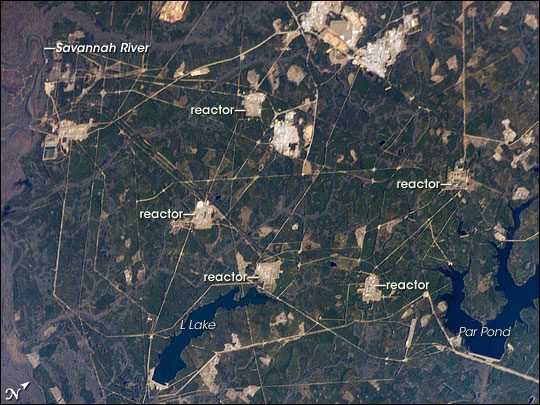

Chapter 1 Building the Bomb Plant
Truman writes to Du Pont asking it to build and run the plant
The Savannah River Plant is announced: 250,000 acres, about 1,500 families to move
Deadline for residents of the first area to leave
Ruth Patrick's baseline survey of the river; the AEC approaches Eugene Odum
House hearings in Augusta on union-controlled hiring at the plant
Jet reports Black families moving whole houses to New Ellenton
Senate hearing in Aiken: no government town; 3,000 trailers; towns ask for federal help
The 305-M test pile goes critical; heavy-water production begins
AEC and the Forest Service agree to manage the land; tree planting on old farms begins
Congress hears that New Ellenton was left out of aid
First shipment of plutonium; the sources disagree on the year
Contamination after rain sets off workers' monitors; the plant blames Nevada fallout, critics later a reactor accident
The neutrino is confirmed at P reactor
An R reactor fuel failure sends over 1,900 curies into a seepage basin
Lower Three Runs Creek is dammed to make Par Pond, a cooling reservoir
Odum's survey becomes a permanent laboratory, the Savannah River Ecology Laboratory
Thermal ecology research on the reactors' cooling water begins
Chapter 2 The Reactors Under Scrutiny
The first National Environmental Research Park
479,000 curies of radioactive tritium gas escape from a stack
The decade's largest anti-nuclear protest: about 1,500 people, 30 arrested at the site
Plutonium made lower in Pu-240 to blend with Hanford's, for the buildup
The plant reports a contaminated drinking-water well for its own employees
Court rules the L reactor restart needs an environmental impact statement
The site's red-cockaded woodpeckers are down to four birds; recovery work begins
A National Academy of Sciences panel reviews reactor safety; Du Pont says it will leave
GAO tells Congress how P reactor's start-up went ahead despite a reactivity shortfall
The New York Times reports on its front page that severe accidents were kept secret for up to 31 years
Westinghouse takes over from Du Pont; the Plant becomes the Savannah River Site
The site goes on the National Priorities List
NIH survey finds no cancer excess it can tie to the plant in Aiken, Barnwell and Burke counties
Par Pond is lowered 19 feet after a dam scare, exposing 1,300 acres of radioactive cesium-contaminated sediment
Radioactive tritium from K reactor reaches the Savannah River
Chapter 3 After the Bombs
K reactor's test run, then permanent shutdown: bomb making is over
The Defense Waste Processing Facility begins turning tank waste into glass
DOE decides to bring foreign research reactor fuel to the site, mostly through Charleston
Tanks 17 and 20 closed, the first in the nation
In-Tank Precipitation abandoned after almost half a billion dollars
Governor Hodges sues to stop Rocky Flats plutonium coming to the site
The last spent fuel leaves the receiving basin, closing a forty-year era
The site's laboratory is named the newest national laboratory
Section 3116 settles what tank waste may stay in the ground
House Science Committee hearing on the ecology laboratory's funding cut
A petition asks to add all workers from 1950 to 2007 to the Special Exposure Cohort
DOE raises payments in place of taxes to the three host counties to $6.2 million
Historic markers for P and R, the first inside the fence
P and R reactors sealed in place with Recovery Act money
Workers from 1953 to 1972 added to the Special Exposure Cohort for compensation
ATSDR warns that heavy eating of river bass, bowfin and catfish may raise mercury risks
Ribbon-cutting for the SRS Museum in Aiken
The 4,000th canister of glass, of about 8,000 expected
DOE puts the MOX plant at $17.17 billion, finished in 2048
DOE secretly ships half a metric ton of plutonium from the site to Nevada
The Fourth Circuit lifts the injunction keeping MOX alive
DOE rejects the safety board's warning on the tritium facilities
Chapter 4 Now
DOE agrees to pay South Carolina $600 million and remove 9.5 metric tons of plutonium by 2037
DOE decides to make plutonium pits at Savannah River
The laboratory gets its own contract, run by Battelle Savannah River Alliance
Red-cockaded woodpeckers reach 150 active groups
Savannah River Mission Completion takes over the liquid waste
South Carolina spends the $525 million plutonium settlement, including new schools for Williston and Blackville
Safety board warns the pit plant's controls may not protect glove-box workers
Compensation and medical payments to the site's sick workers pass $2.2 billion
NNSA, the weapons agency, becomes the site's landlord
Executive order halts dilute and dispose, except what DOE owes South Carolina
DOE reverses course and restores uranium recovery at H Canyon
Tank 14 becomes the eighth old-style tank to finish waste removal in under two years
The 2026 deer hunts begin: dog hunts only, every animal checked for radioactive cesium-137
DOE authorizes full construction of the pit plant
A laboratory fire leads to a Site Area Emergency; no contamination detected
The Reactors
| Reactor | Working life | Source |
|---|---|---|
| R | Critical December 1953; shut down 1964. | WBsource |
| P | Critical February 20, 1954; down August 1988. Its final shutdown is dated 1988 by SRS and 1991 by OSTI. | WBsource |
| L | Running by March 1955; idle from 1968; restarted 1985; down June 1988. | WBsource |
| K | Running by March 1955; down April 1988; a test run in 1992, then shut down for good. | WBsource |
| C | Running by March 1955; shut down 1985, permanently from 1986. | WBsource |
